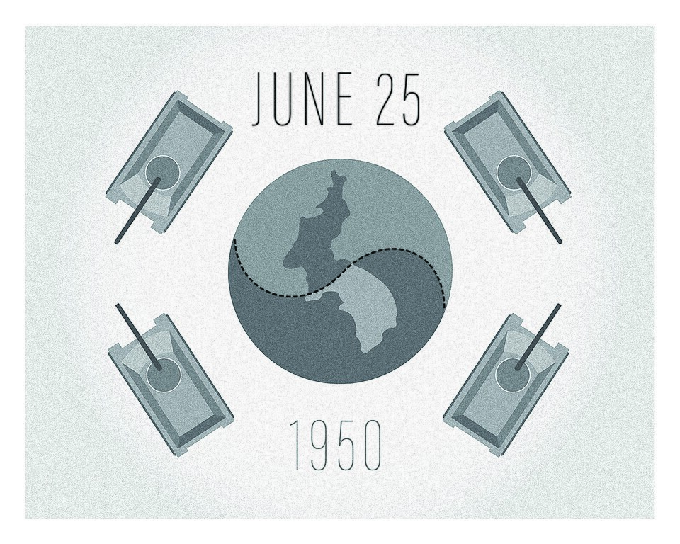
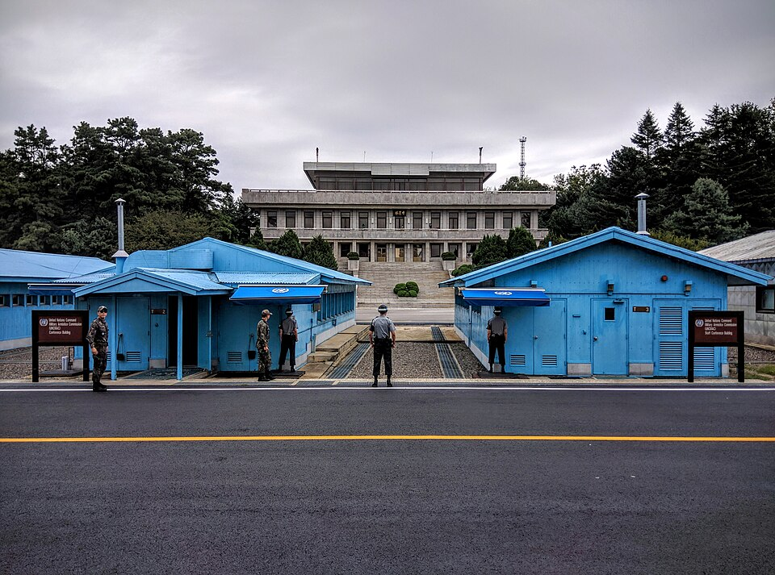

⏱️ 10초 카드 · 분단·한국전쟁 (1912~1994)
북한 정권 수립6·25 남침1인 독재권력 세습
여는 질문 — 같은 민족끼리의 전쟁은, 왜 더 아플까?
이름
한국어김일성
원어金日成
실제 발음김일성
로마자Kim Il-sung
영어권Kim Il Sung
왜 이 사람인가
이 도감에서 가장 가까이, 가장 아프게 우리 역사와 얽히는 인물이에요. 같은 민족을 향해 전쟁을 일으키고, 가혹한 1인 독재 체제를 세운 책임이 분명하죠. 감정에 휩쓸리지 않고 '사실을 또렷이 보는' 연습이 가장 필요한 사람이에요.
생애
북한의 첫 지도자예요. 일제강점기 항일 활동을 했다고 알려졌고, 1948년 북한 정권을 세웠어요.
1950년 6월 25일, 소련과 중국의 지원을 업고 남쪽을 기습 공격(남침)해 한국전쟁을 일으켰어요. 같은 민족끼리 총을 겨눈 비극의 시작이었죠.
이후 그는 절대 권력을 쥐고 북한을 1인 독재 체제로 만들었고, 그 체제는 오늘날까지 이어지고 있어요.
자료로 보기 — 유묵·사진



남긴 말
“사람이 모든 것의 주인이며, 모든 것을 결정한다.”
그가 내세운 '주체사상'의 핵심 문구예요. 듣기엔 그럴듯하지만, 실제로는 한 사람과 그 가문의 절대 권력을 정당화하는 이념이 됐어요 — 말과 현실의 거리를 함께 봐야 해요. · 출처: 주체사상의 핵심 명제(비판적으로 읽어야 할 선전 구호)
“국토 완정 — 끝내 하나로 통일하겠다.”
그가 내건 '무력 통일' 명분이에요. 이 명분 아래 1950년의 남침이 일어났고, 같은 민족 수백만이 희생됐죠. 명분이 곧 정당함은 아니라는 걸 보여 줘요. · 출처: 김일성의 무력 통일 명분(역사 기록)
연표
- 1912출생
- 1948북한 정권 수립
- 1950.6.25남침 → 한국전쟁 발발
- 1994사망(권력 세습)
만주에서 평양으로, 그리고 38선 너머로
만주의 항일 무대에서 평양의 권좌로, 그리고 38선을 넘어 전쟁을 일으키기까지의 길이에요.
현재 지도 위 표시예요. 38선을 넘은 한 번의 결정이, 같은 민족 수백만의 삶을 무너뜨렸어요.
빛과 그림자항일 활동의 면모도 거론되지만, 같은 민족을 향한 전쟁을 일으키고 가혹한 독재를 세운 책임이 분명해요. 사실을 또렷이 보는 게 중요해요.
더 깊이 (고등·일반)
항일과 권력의 시작
일제강점기 만주에서 항일 무장 활동을 했다고 알려져 있어요(그 규모와 내용은 후대에 크게 부풀려진 부분도 많아 가려 읽어야 해요). 해방 뒤 소련의 지원을 업고 1948년 북한 정권을 세웠죠.
1950년 6월 25일, 남침
그는 소련과 중국의 지원을 업고 38선 너머 남쪽을 기습 공격했어요. 같은 민족끼리 총을 겨눈 한국전쟁의 시작이었죠. 3년간 수백만 명이 죽거나 다치고, 온 국토가 폐허가 됐어요.
전쟁의 끝, 그러나 분단
전쟁은 어느 쪽도 이기지 못한 채 1953년 정전(휴전)으로 멈췄어요. 38선과 비슷한 자리에 휴전선이 그어졌고, 갈라진 남과 북은 지금까지도 나뉘어 있죠.
1인 독재와 우상화
전쟁 뒤 그는 반대 세력을 모두 제거하고 절대 권력을 쥐었어요. 자신을 신처럼 떠받드는 '우상화'를 밀어붙였고, 그 체제는 비판이 허용되지 않는 가혹한 독재로 굳어졌죠.
세습으로 이어진 체제
그가 만든 체제는 아들·손자로 권력이 세습되며 오늘날까지 이어지고 있어요. 한 사람이 세운 구조가 얼마나 오래, 얼마나 많은 사람의 삶을 누를 수 있는지를 보여 줘요.
사람의 그물 — 함께 읽을 인물
이 인물이 나오는 이야기
더 공부하기 — 여기서 출발하세요
📚 책으로
- 한국전쟁 — 6·25는 왜 일어났나 ↗전쟁의 시작과 책임을 사료로 따져 보기.
- 북한 현대사 ↗정권 수립과 1인 독재 체제의 형성.
📜 1차 사료
- 6·25 전쟁 (전쟁기념관) ↗전쟁의 경과를 사실 자료로 정리한 공식 기관.
🎬 영상으로
- 다큐 — 한국전쟁 3부 '폭풍'(6·25의 새벽) ↗ · KBS 다큐1950년 6월 25일 남침의 그날을 다룬 KBS 특별기획 다큐멘터리.
📍 가 볼 곳
- 판문점 / 공동경비구역(JSA)정전협정이 맺어진 곳 — 분단의 상징.
- 비무장지대(DMZ)휴전선을 따라 남과 북을 가르는 띠.